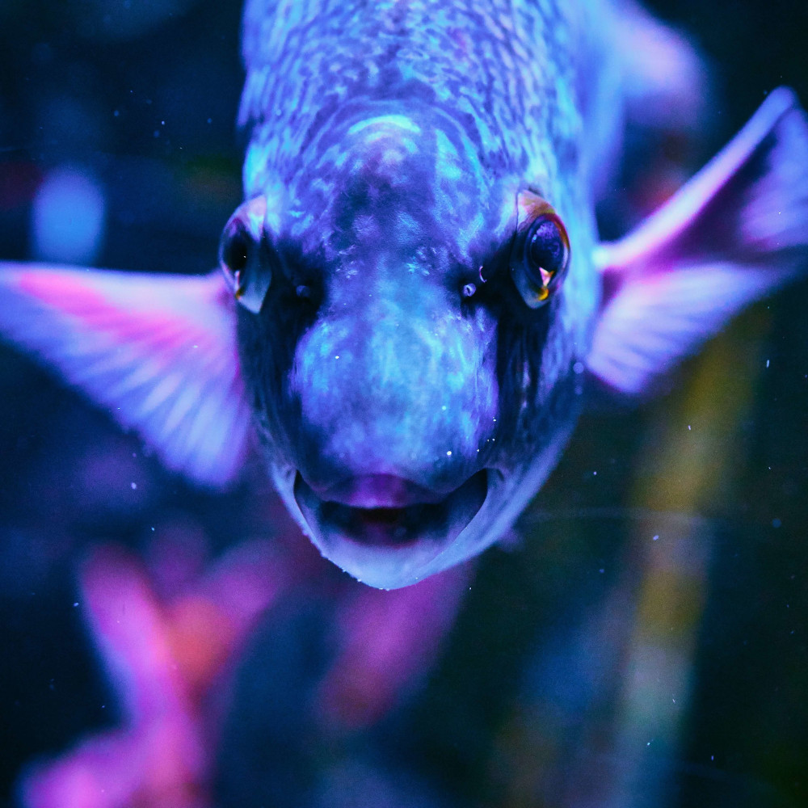

<!DOCTYPE html>
<html lang="at-de">
   <head>
      <meta charset="UTF-8">
      <meta name="viewport" content="width=device-width, initial-scale=1">
      <link rel="stylesheet" type="text/css" href="styles.css">
      <title>Der Linzer Zoo</title>
      <meta name="Der Linzer Zoo" content="Der Linzer Zoo am Pöstlingberg und seine Bewohner.">
      <meta name=”robots” content=”noindex, nofollow”>
      <link href="https://fonts.googleapis.com/css2?family=Permanent+Marker&family=Ubuntu:wght@300&display=swap" rel="stylesheet">
        <link rel="apple-touch-icon" sizes="57x57" href="images/apple-icon-57x57.png">
        <link rel="apple-touch-icon" sizes="60x60" href="images/apple-icon-60x60.png">
        <link rel="apple-touch-icon" sizes="72x72" href="images/apple-icon-72x72.png">
        <link rel="apple-touch-icon" sizes="76x76" href="images/apple-icon-76x76.png">
        <link rel="apple-touch-icon" sizes="114x114" href="images/apple-icon-114x114.png">
        <link rel="apple-touch-icon" sizes="120x120" href="images/apple-icon-120x120.png">
        <link rel="apple-touch-icon" sizes="144x144" href="images/apple-icon-144x144.png">
        <link rel="apple-touch-icon" sizes="152x152" href="images/apple-icon-152x152.png">
        <link rel="apple-touch-icon" sizes="180x180" href="images/apple-icon-180x180.png">
        <link rel="icon" type="image/png" sizes="192x192"  href="images/android-icon-192x192.png">
        <link rel="icon" type="image/png" sizes="32x32" href="images/favicon-32x32.png">
        <link rel="icon" type="image/png" sizes="96x96" href="images/favicon-96x96.png">
        <link rel="icon" type="image/png" sizes="16x16" href="images/favicon-16x16.png">
        <link rel="manifest" href="images/manifest.json">
        <meta name="msapplication-TileColor" content="#ffffff">
        <meta name="msapplication-TileImage" content="images/ms-icon-144x144.png">
        <meta name="theme-color" content="#ffffff">
   </head>
</html>

   <body>

      <header>
         <nav>
             <ul>
                 <li><a href="index.html" class="aktuell">Home</a></li>
                 <li><a href="infos.html">Infos</a></li>
                 <li><a href="Kontakt.html">Kontakt</a></li>
             </ul>
         </nav>
         <div class="headerImageIndex">
             <div class="headerText">
                <h1>Der Linzer Zoo</h1>
                <button>Kontakt</button>
             </div>
         </div>
         
      </header>

      <main>
         <article>
            <h2>Unsere Tierarten</h2>
         </article>

         <article class="animalsArticle">
            <section class="animalsSection">
                <h3>Säugetiere</h3>
                
                <ul>
                    <li>Schimpansen</li>
                    <li>Ziegen</li>
                    <li>Gazellen</li>
                    <li>Zebras</li>
                </ul>
            </section>
            <section class="animalsSection">
                <h3>Insekten</h3>
                
                <ul>
                    <li>Libellen</li>
                    <li>Termiten</li>
                    <li>Bienen</li>
                    <li>Ohrwürmer</li>
                </ul>
            </section>
            <section class="animalsSection">
                <h3>Fische</h3>
                
                <ul>
                    <li>Forellen</li>
                    <li>Karpfen</li>
                    <li>Aale</li>
                    <li>Goldfische</li>
                </ul>
            </section>
            <section class="animalsSection">
                <h3>Vögel</h3>
                
                <ul>
                    <li>Papageien</li>
                    <li>Uhus</li>
                    <li>Amseln</li>
                    <li>Adler</li>
                </ul>
            </section>
         </article>
         
         <article>
            <h2>Was essen die Tiere?</h2>
         </article>

         <article class="anmialFood">
             <section class="anmialFoodSection">
                 <dl>
                     <dt>Lieblingsessen von Schimpansen</dt>
                     <dd>Genau wie wir Menschen sind die Schimpansen <a href="https://de.wikipedia.org/wiki/Allesfresser" target="_blank">Allesfresser</a>. Das heißt, dass sie alle Arten vegetarischer Nahrung zu sich nehmen, aber auch Tiere essen. Die Liste der Nahrungsmittel ist lang: Früchte, Nüsse, Blätter, Pflanzen, Pilze, Blumen, Insekten, Fleisch und mehr.</dd>
                 </dl>
                 <dl>
                    <dt>Lieblingspeise der Fische</dt>
                    <dd>In der Natur fressen die Fische, die im Allgemeinen als Zierfische gehalten werden, hauptsächlich Insektenlarven, Krebstiere wie Wasserflöhe und Hüpferlinge, andere Fische, Würmer und Pflanzen bzw. Algen.</dd>
                </dl>
                <dl>
                    <dt>Leibspeise der Vögel</dt>
                    <dd><strong>Singvögel</strong> fressen im Sommer Insekten, Würmer, Larven, Läuse, Beeren und im Winter fressen viele Singvögel Obst, Nüsse, Haferflocken, Rosinen und Sämereien.
                    <br>
                    Alle <strong>Greifvögel (Raubvögel)</strong> und Eulen fressen im Sommer und Winter dasselbe. Wie z.B. Vögel, Ratten, Kleinsäuger, Fisch und Aas. Es gibt aber immer Ausnahmen, wie z.B. der Seeadler. 
                    </dd>
                </dl>
                <dl>
                    <dt>Hauptgericht von Insekten</dt>
                    <dd>Grundsätzlich können sich Insekten (wie andere Tiere auch!) von pflanzlichen oder tierischen Stoffen ernähren. Dabei ist die Nahrungspalette der Insekten aber so weit gespannt, dass es wohl keinen organischen Stoff gibt, der nicht irgendwelchen Insekten als Nahrungsquelle dient.</dd>
                </dl>
             </section>
         </article>

         <article>
            <h2>Unser Zoo und seine Bewohner</h2>
         </article>
         <article class="video">
            <div class="embedContainer">
                <iframe width="962" height="541" src="https://www.youtube.com/embed/5P1No_yqo68" frameborder="0" allow="accelerometer; autoplay; encrypted-media; gyroscope; picture-in-picture" allowfullscreen></iframe>
            </div>
         </article>

         <article>
            <h2>Magst du mich streicheln?</h2>
         </article>
         <div class="crocodile">
            <p class="surprise">
                Rrrrr! Das mag ich!
            </p>
            
         </div>


         <article>
            <h2>Schau doch auch vorbei!</h2>
         </article>
         <div class="headerText">
            <button>Kontakt</button>
         </div>

      </main>

      <footer>
        <p>&copy;Der Linzer Zoo 2020</p>
    </footer>

   </body>

</html>
